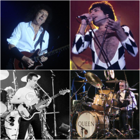

Queen es una banda británica de rock formada en 1970 en Londres por:
|
 |
El grupo gozó de un gran éxito en el Reino Unido con álbumes como Sheer Heart Attack (1974) y A Night at the Opera (1975). Este último llamó la atención internacionalmente, en especial por el sencillo "Bohemian Rhapsody", y colocó a Queen en un primer plano de la escena musical. Tuvieron una significativa repercusión en Estados Unidos a finales de los años 1970, ya con un numeroso repertorio de éxitos. A nivel artístico, se ha destacado su diversidad musical, sus arreglos en múltiples capas y sus armonías vocales. Es considerada una banda de gran influencia en el desarrollo del hard rock y el heavy metal, incorporando elementos del glam rock, rock progresivo, folk, ópera, blues y pop. Fue una de las primeras agrupaciones musicales en hacer de sus conciertos espectáculos muy vistosos mediante el uso de bombas de humo, flashpots o innovadores sistemas de luces móviles, además de promover la participación del público en los mismos, contribuyendo así al auge del arena rock.
| Trabajos musicales | |
| Álbum | Año de publicación |
| Quee | 1973 |
| Sheer Heart Attack | 1974 |
| A Night at the Opera | 1975 |
| Innuendo | 1991 |
| Made in Heaven | 1995 |
Para conocer más de esta banda visita su sitio web oficial